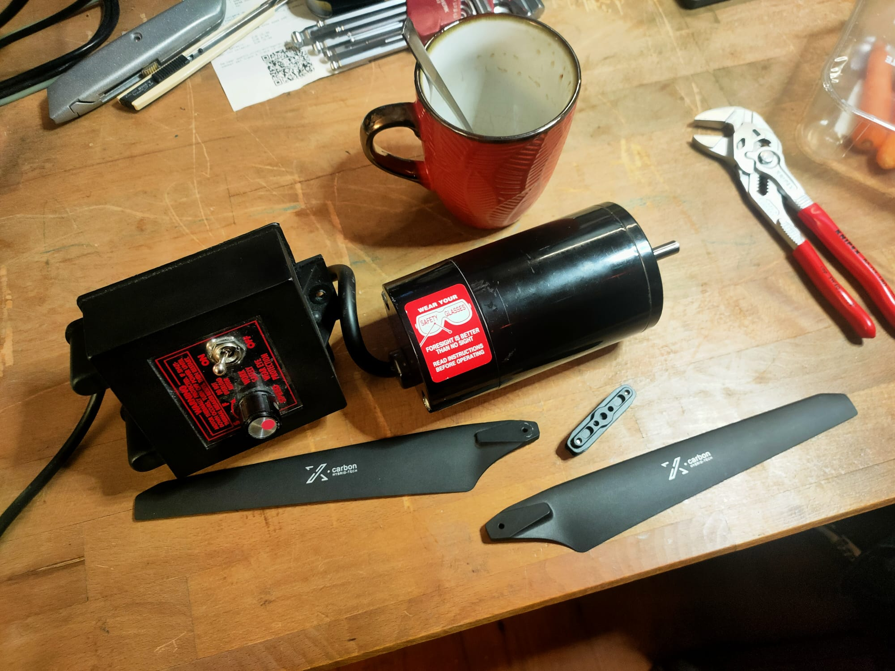
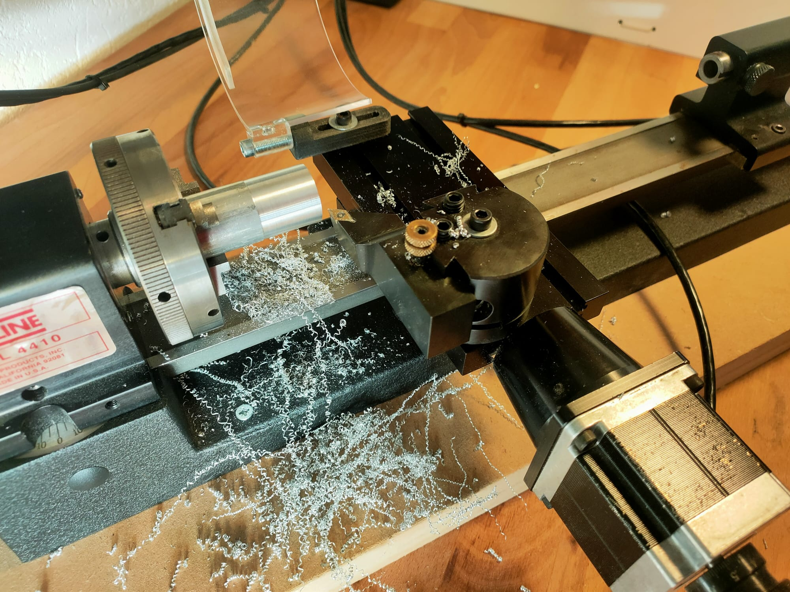
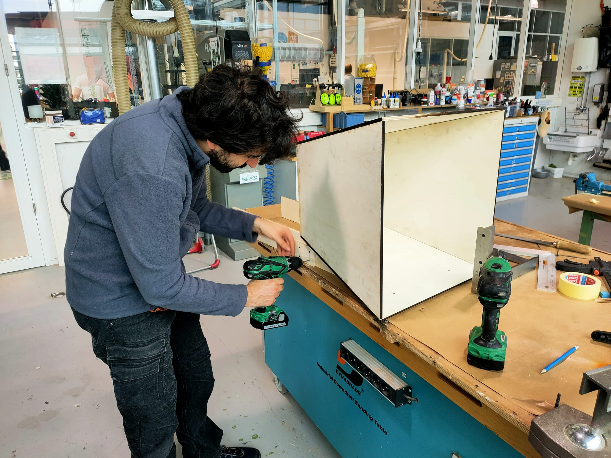
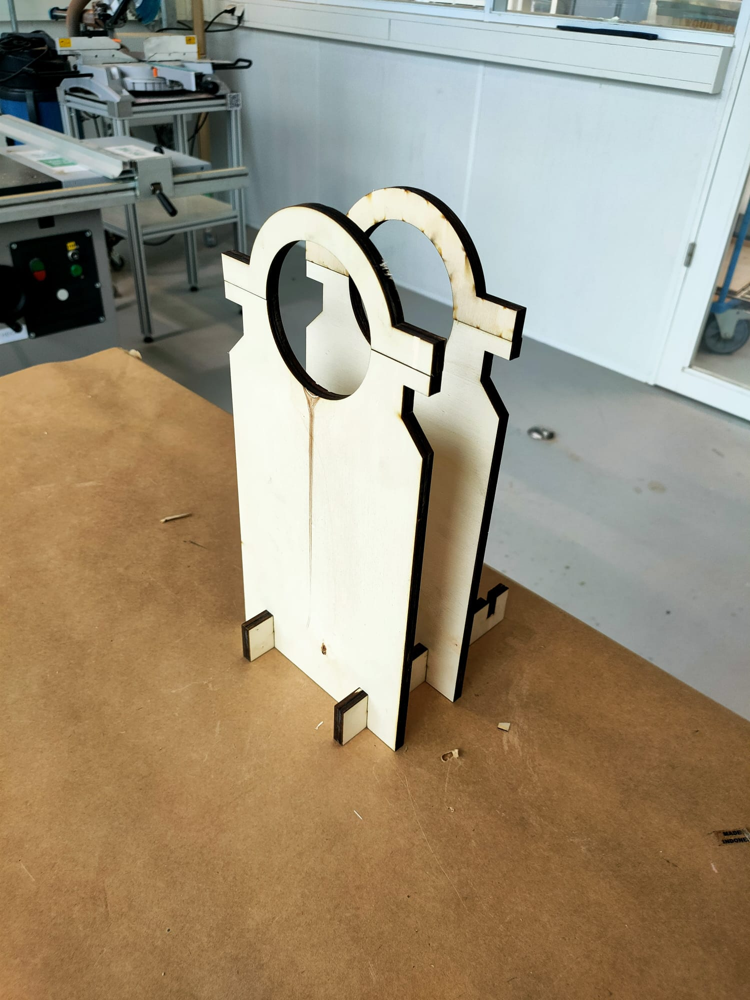
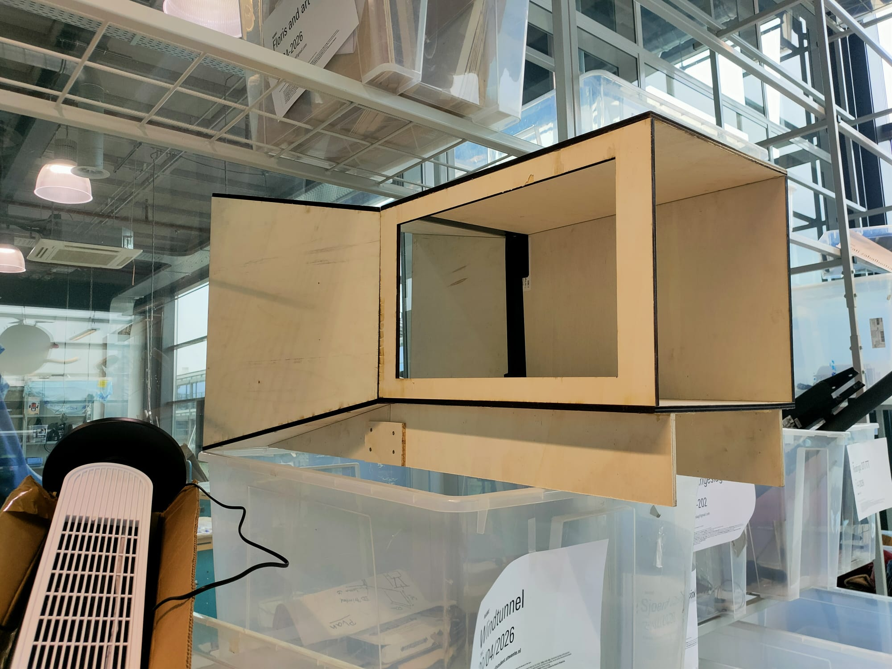

Process
MVP Approach
We approached this as a tinkering process, focusing on building a minimal viable product (MVP) as fast as possible. Instead of fully designing everything upfront, we started building early and worked iteratively.
The goal was to test functionality quickly rather than aiming for a finished product.
Working with Constraints
We reused a 350W motor from an old milling machine. This constraint defined a large part of the system and forced us to adapt the design around it.
Using existing components helped us move directly into rapid prototyping.


Rapid Prototyping
To integrate the motor, we created a motor adapter. This was a quick and functional solution, not optimized, but good enough for testing.
This reflects a rapid prototyping approach where speed is more important than perfection.
Digital to Physical
I created a CAD sketch for the funnel geometry, which was then laser cut from wood. This allowed us to quickly move from design to physical components.
The digital model acted as light scaffolding to guide the build without restricting changes.


Co-Design
Different parts were developed in parallel. While I worked on the funnel, someone else designed and built the motor mount.
This is a co-design process where multiple components are created independently and later combined.
Assembly & Iteration
All parts were assembled into a first MVP to test airflow and general functionality.
The process is iterative: build, test, evaluate, and improve. The goal is to learn from the prototype rather than finalize it.


Scaffolding
The scaffolding in this project was minimal but important. CAD sketches, access to tools, and existing components provided enough structure to get started.
At the same time, the process remained open. The setup encouraged experimentation rather than following strict instructions.